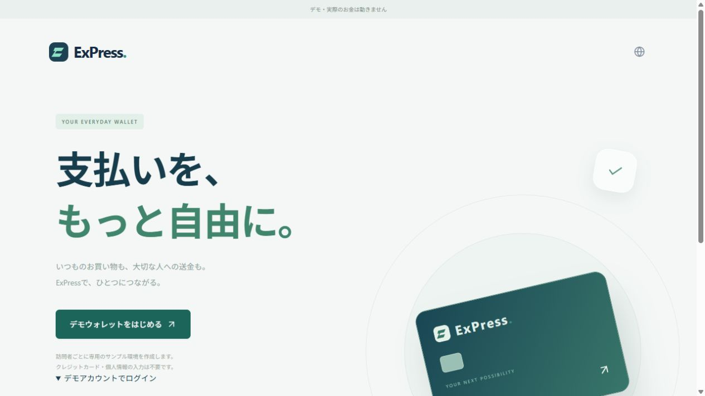
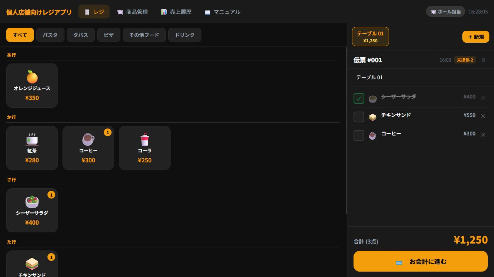

Technology, with a human perspective.
つくることから、
自由をひろげる。
人とお金、お店と日常。
その間にある仕組みを、もっと心地よく。
制作プロジェクトを見る ↗01
About Freedom
当たり前を、少し違う角度から。
お金のやりとりを、もっとわかりやすく。
お店の仕事を、もう少し軽やかに。
使う人の立場から考え、画面だけでなく、その先の仕組みまでつくる。
そんな自主制作の積み重ねを、これからの事業につなげていきます。
Freedomは、Atsushi Odajimaによる会社設立に向けた構想です。
このサイトでは、設立前の個人の制作活動をご紹介しています。
02Selected projects
考えて、つくってきたもの。
決済と店舗運営を中心とした、
5つの自主制作アプリ。
決済申請から売上確定、返金、加盟店への精算まで。
複数の支払い方法にまたがる業務をまとめて管理するダッシュボードです。
数字から、決済の動きを読み取る。
決済件数・成功率・金額の推移を確認。期間や加盟店で絞り込み、CSVで出力できます。
スマートフォンにQRを表示して支払う。お店のQRを読み取って支払う。
2つの支払い方に、チャージ・送金・割り勘をまとめた決済アプリです。
法定通貨・暗号資産・ポイントを、ひとつのEウォレットで管理。
チャージから両替、国内外のEC決済までをつなぎ、加盟店は自国の通貨で受け取れます。
利用者・店舗・運営をつなぐ決済基盤のプロトタイプ。
支払いから、その後の売上確定・返金までをひと続きに設計しています。

拡大して見る ↗ウォレットの入口
アプリの起動画面です。決済処理はデモです。
支払いから、その先まで
残高払いに加え、売上確定・部分返金・継続課金の処理を実装。
ECサイトとつなぐ
サンプルECをAPI・SDKで接続し、Webhookで決済後の処理へ。
個人店の日々の仕事に寄り添う、店舗レジアプリ。
テーブルごとの注文と提供状況を共有し、接客から会計までを支えます。

拡大して見る ↗注文と会計を、ひとつの画面で
サンプルデータを使った注文・会計の画面です。
注文を、迷わず共有
商品やトッピングを選び、卓ごとの伝票と調理・提供状況を管理。
日々の店舗運営を支える
釣り銭計算、売上履歴、メニュー管理。ホールとキッチンで役割を分担。
掲載内容は個人の自主制作です。決済アプリは実際の資金を扱わないデモであり、商用サービスの提供・顧客導入実績を示すものではありません。
03Fields of interest
つくる。その先の、
届けるまで。
ITを起点に、伝え方や売り方まで。
これから取り組んでいきたい4つの領域です。
IT & Software
Webサービス・業務アプリの設計と開発
Communication
広告・クリエイティブを通じた伝え方の設計
Apparel
自分たちの価値観をかたちにするブランドづくり
E-commerce
商品との出会いから購入までをつなぐ体験設計